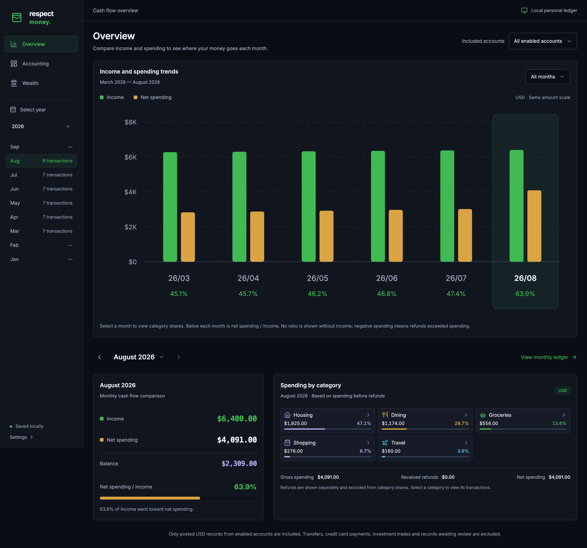
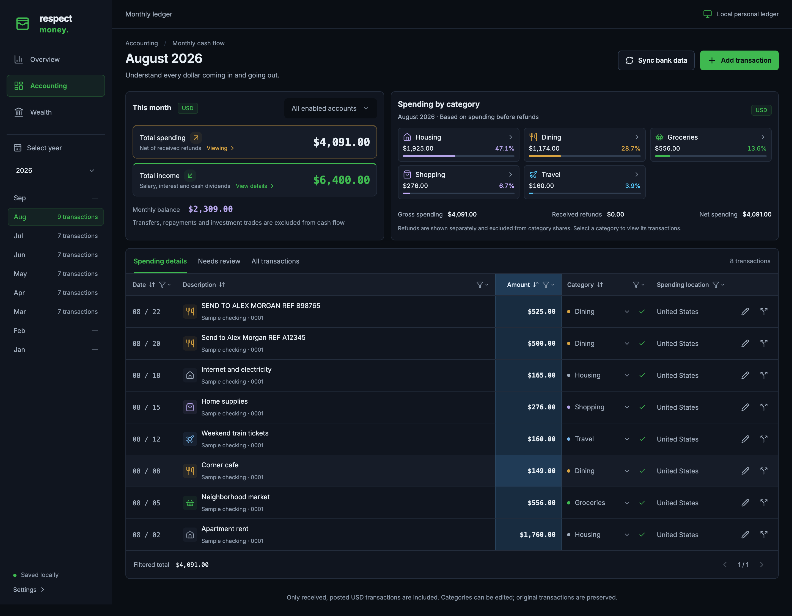
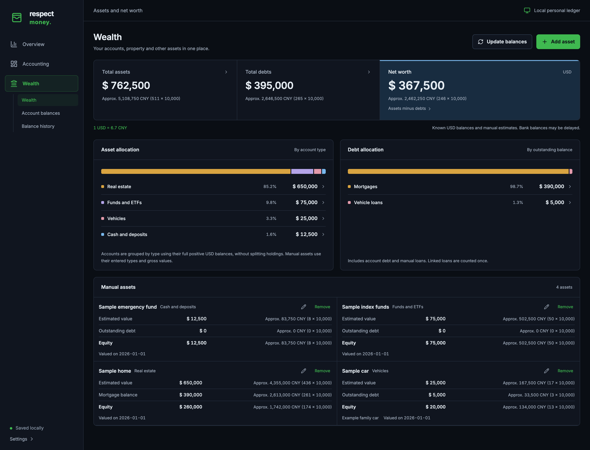
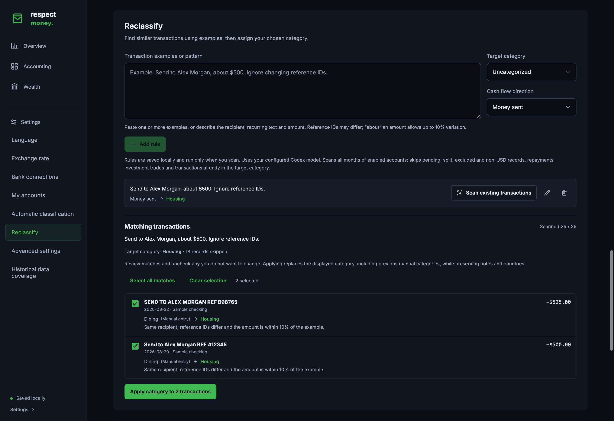

Free to run.
No Respect Money subscription or hosted account. Start with manual entries, then bring your own Plaid and Codex access when you want more automation.
No app subscriptionA free, local alternative to apps like Rocket Money.
Connect your accounts. Let AI sort the transactions.
Spend less time labeling and more time understanding.
No Respect Money subscription. Your ledger stays on your computer.
Plaid and AI are optional online services with their own terms.

Income and spending trends, monthly cash flow, and category shares in Overview.
Open full-size screenshot: Monthly overview (new tab) ↗
The Accounting ledger, with monthly totals, category filters, and editable transaction details.
Open full-size screenshot: Transaction ledger (new tab) ↗
Assets, debts, net worth, and allocation breakdowns in Wealth.
Open full-size screenshot: Wealth (new tab) ↗
Settings → Reclassify: save an example, review matching transactions, and apply a category in a batch.
Open full-size screenshot: Reclassification (new tab) ↗Captured from the running app with fictional demo data. Tap a screenshot to open the full-size image and zoom in. Controls inside the screenshots are not interactive.
Your accounts, spending, and wealth in one place. Keep the ledger yourself and let AI help with the sorting.
No Respect Money subscription or hosted account. Start with manual entries, then bring your own Plaid and Codex access when you want more automation.
No app subscriptionCodex helps classify transactions and infer countries from the available clues. Review the results in your ledger and keep your own decisions in place.
Categories & country suggestionsGive the app an example of a misclassified payment. Preview similar records and apply your correction in a batch—even across thousands of eligible transactions.
Example → preview → applyEligible Plaid Trial accounts can create up to 10 Production Items for free. One login can cover several accounts, leaving room for a personal banking setup.
Checking, credit & investmentsPlaid counts connections, called Items, rather than individual accounts or unique institutions. Eligibility and institution support apply; deleting an Item does not restore a Trial slot. Read Plaid’s Trial terms. Codex access and any model-service charges are separate.
The app and backend run on your computer. Your transactions, categories, notes, settings, and wealth history stay in your local database. Back it up on your terms; there is no Respect Money cloud storing your ledger.
Read the privacy boundariesWhen you use AI, selected transaction details and any rule examples are sent to your configured model service. AI processing is not fully offline. Manual bookkeeping works without Plaid or Codex.
Connect once, sync the months you need, and turn a pile of transactions into a picture you can understand.
Sign up with Plaid and check Trial eligibility. The free plan supports up to 10 real bank connections for eligible developers in the US and Canada.
Install Node.js 24 or later, clone the project, and run the commands below. Open the local page in your browser. Use tmux if you want the service to keep running after closing the terminal.
In Settings, save your Plaid client ID and secret. Select Production for real accounts, including Trial. Install and sign in to the Codex CLI, then choose a model under Automatic classification.
Select Connect accounts and authorize your accounts in Plaid Link. Checking, credit, and investment accounts are identified automatically. Use Manage accounts to update an existing connection.
In Accounting, select Sync bank data and choose a month, year, or date range. The app fetches available records from Plaid and uses Codex to classify new transactions. Use Reclassify to review and correct recurring mistakes in batches.
Explore monthly cash flow in Overview, inspect your ledger in Accounting, and track assets, debts, and net worth in Wealth. Add manual assets and save balance snapshots over time.
Start on your own computer with Node.js 24 or later. Manual bookkeeping works immediately; add your Plaid credentials and a signed-in Codex CLI when you are ready for bank sync and AI.
Follow the full setup guide# Clone the project
git clone https://github.com/gtxistxgao/respect-money.git
cd respect-money
# Install, build, and start
npm ci
npm run build
npm startThen open localhost:3001 in your browser. To switch the default Chinese interface to English, open Settings → Language.
On macOS or Linux, install tmux and stop the foreground app with Ctrl+C. From the same project directory, run:
tmux new-session -d -s respect-money 'npm start'
# Return to the console
tmux attach-session -t respect-moneyDetach with Ctrl+B, then D. Stop the app with Ctrl+C while attached. Your computer must stay awake; tmux does not restart the app after a reboot.
Respect Money has no app subscription. Eligible Plaid Trial accounts can create up to 10 Production Items at no cost. Codex uses your own account and model access, so its usage limits and any service charges still apply. You can use manual bookkeeping without either service.
The limit is 10 Items. An Item represents one login at one financial institution and may include several accounts, such as checking and savings. Separate logins or duplicate connections can use additional Items, and deleting one does not restore a Trial slot. Eligibility, legacy account terms, and institution access can differ. See Plaid’s free-access guide and Item definition.
Your saved ledger and settings live locally. Bank sync contacts Plaid, and AI classification sends selected transaction details and rule examples through your local Codex CLI to its model service. AI inference is not fully offline. Local databases and backups also contain unencrypted financial data and credentials, so keep them private.
Reclassify scans eligible transactions across enabled accounts in batches. Supply an example or pattern, choose a category and cash flow direction, review the matches, and apply your correction to the selected records. This replaces repetitive row-by-row editing while keeping you in control. Rules run only when explicitly scanned; applying a correction can replace an earlier manual category.
The current AI workflow requires a working, signed-in Codex CLI. Follow the official installation guide, then select a model in Settings. Testing open-source models, including local inference, is on the roadmap with the aim of reducing that dependency. It is not a feature of this release.
Connecting an account starts an initial sync from January 1, 2026 through today. After that, you choose when to sync and which dates to request. Jobs continue if you close the browser while the backend stays running. Available history and freshness depend on the provider; this release does not schedule recurring bank polling.
Accounting totals cover posted USD income and spending, including cash dividends, interest, and standalone investment fees. Transfers, repayments, and securities trades stay out of those totals. Wealth brings together USD balances, manual assets, debts, and daily balance snapshots. Portfolio profit and loss is not included.
This page introduces the project and uses fictional sample data. The application runs on your computer for a single local user. It has no public login or multi-user isolation and is not designed for public internet hosting.